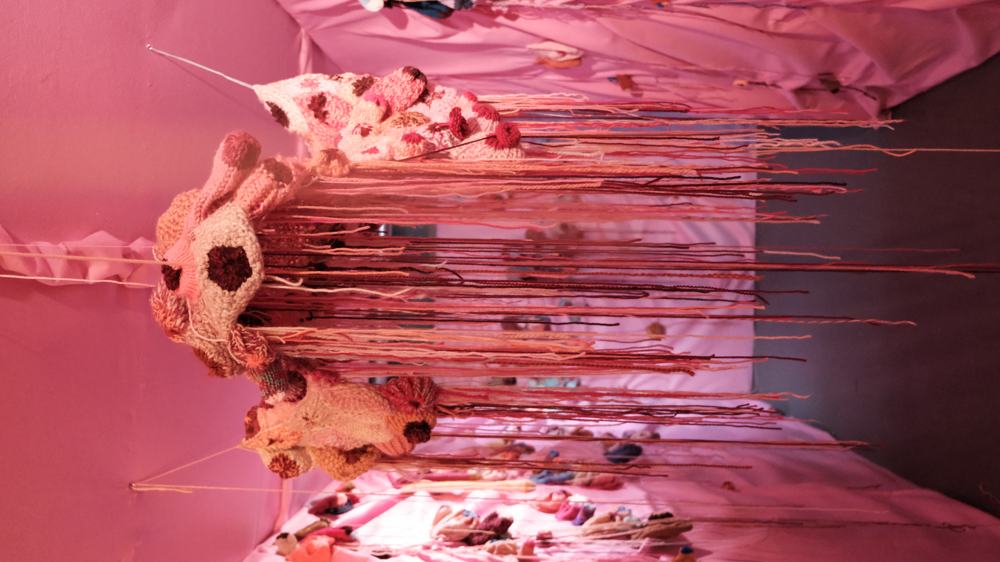
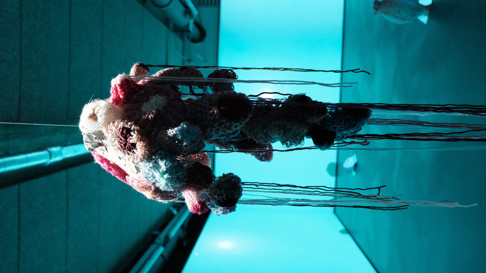
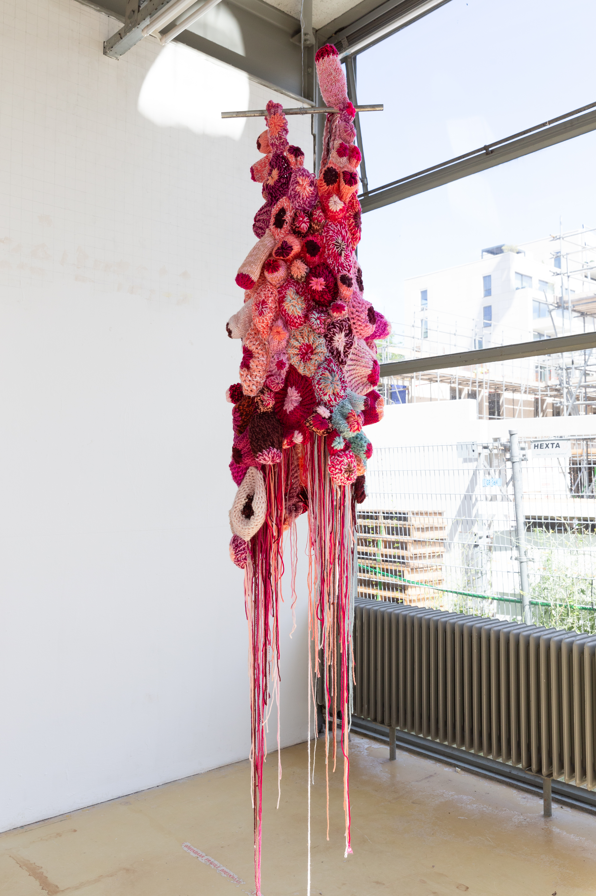

Iteration #1
A tunnel of felt, folded over the wall like a skin and covered with knitted breasts, leading to an open space with four projections, creating two walls of 2.44 x 7 m of four ‘isles’ of knitted breasts slowly floating through water, accompanied by a soft sound of knitting machines, a sound that resembles rain. The space filled with dots and objects of knitted breasts. The beamers, cables and speakers were deliberately part of this space, emphasising that the soft knitted breasts are taking over the space.
Treated as nothing but breasts, I decided, out of anger at the patriarchy, to cover the world in knitted breasts. But knitting is a slow process. As I worked, the anger gave way to softness: a form of resistance that is less about confrontation and more about celebrating softness and spreading it, to ‘infect’ others and the spaces around them with it.


